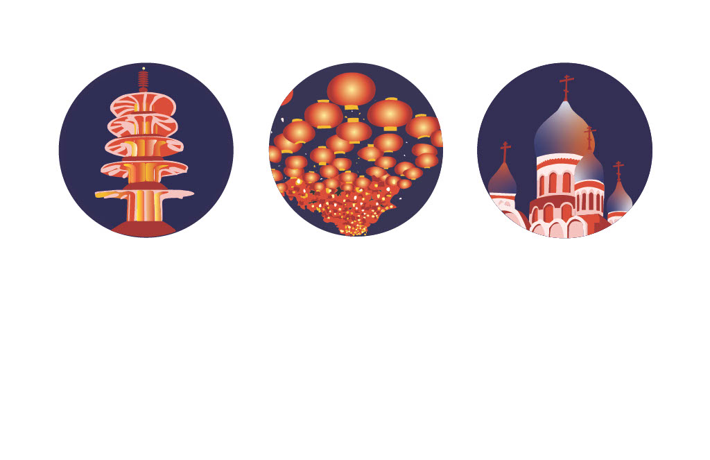
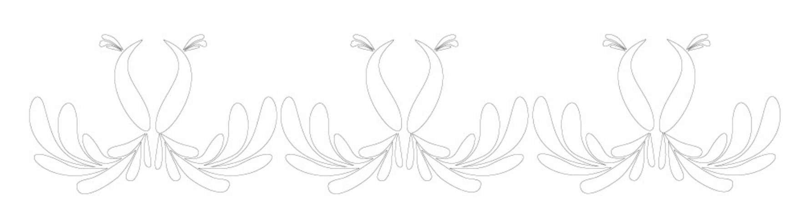

San Francisco Icons
Three icons representing Japantown, Chinatown, and the Richmond District — unified through color and mood.
View Project →
Architecture Abstracted
A series of Illustrator works capturing quiet campus architecture with a minimal palette inspired by Victorian homes.
View Project →

Patterns Simplified
Geometric reinterpretations of Indian textile borders — balancing tradition and modern minimalism.
View Project →